They run toward the call. We run toward them.
When one of ours is hurt, sick or hit by hard times, we help with the bills. And we help their kids get to college. Brazos County takes care of its own.
Founded in memory of Constable Brian Bachmann, Brazos County Pct. 1. End of Watch: August 13, 2012.
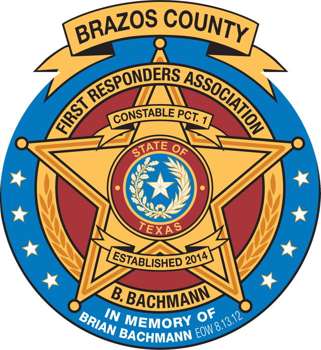
Where your money goes
To the people who answer when you call 911.
When one of ours gets hurt
Direct financial help for local first responders and their families when they're injured or ill in the line of duty, or hit by another hardship.
Their kids, our scholarships
Scholarships for graduating high school seniors whose parents serve as Brazos County first responders.
Everybody eats
Steak, chili, brisket. Cops, firefighters and neighbors at one table.
Upcoming events
Three fundraisers. Every plate funds help and scholarships.
Last January in Kurten
Full house, full plates at the 3rd Annual Steak Dinner. Spot yourself? Tag yourself on Facebook.
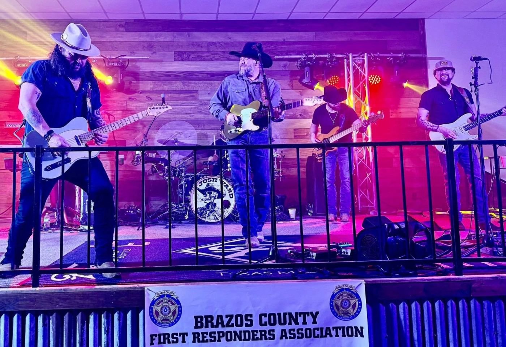
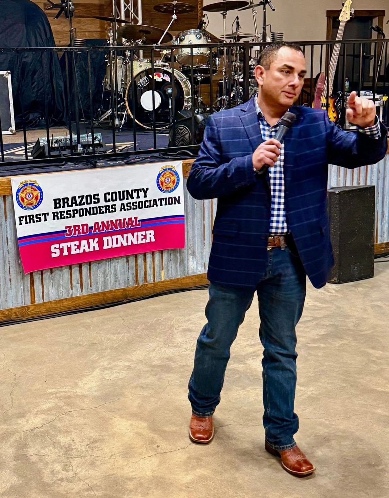
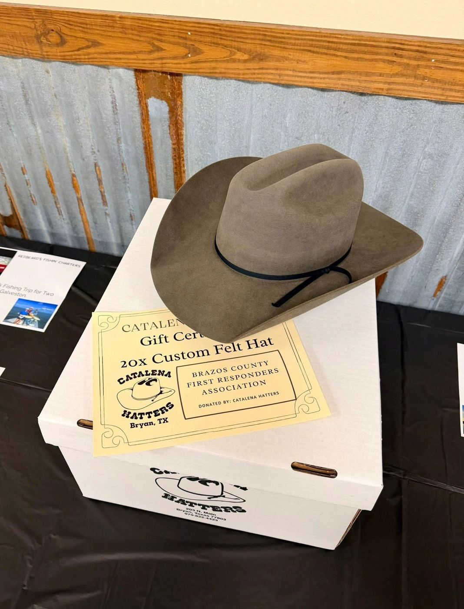
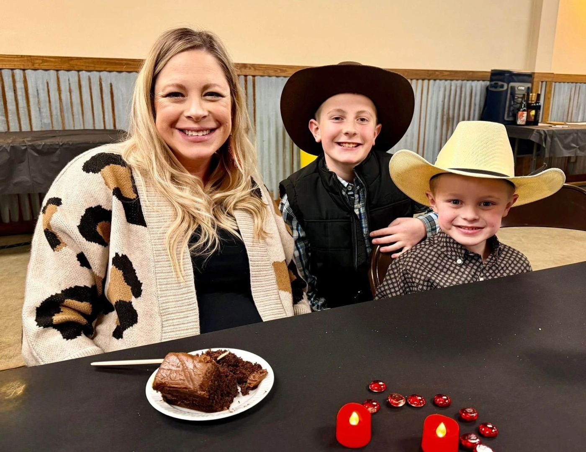
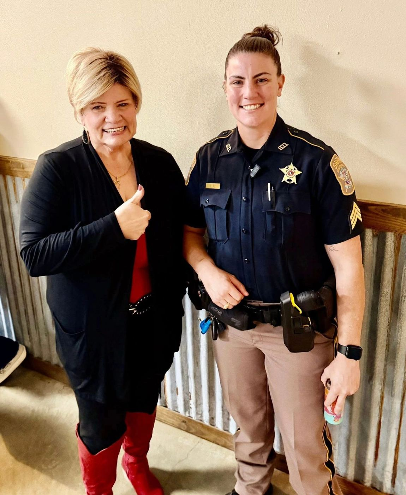
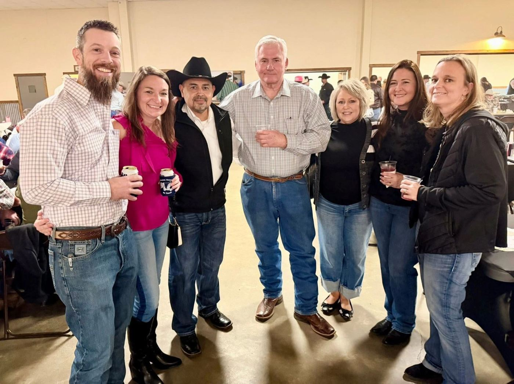
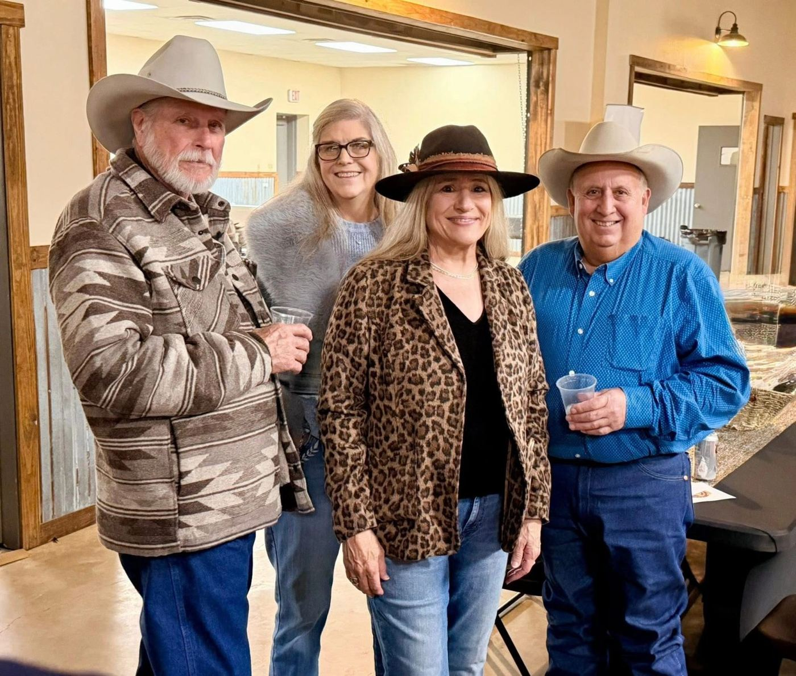
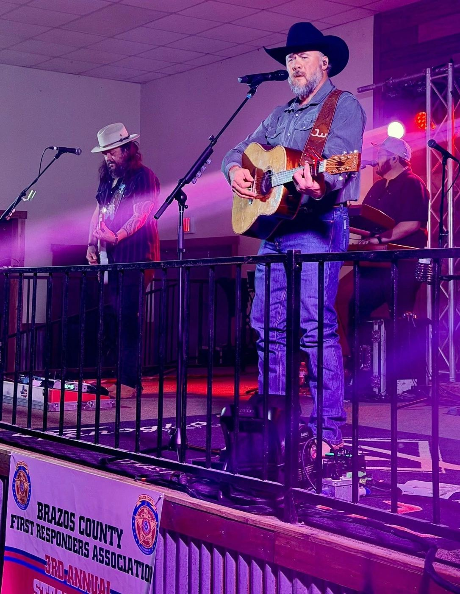
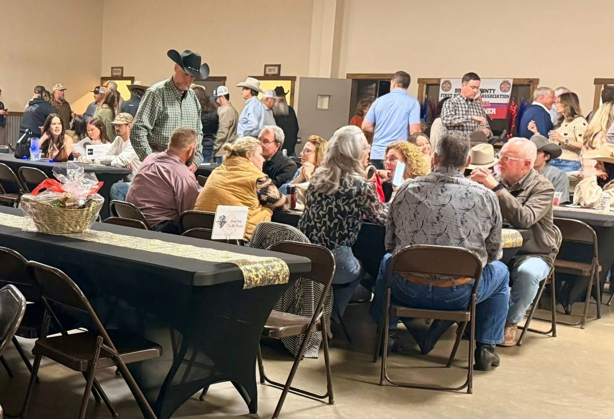
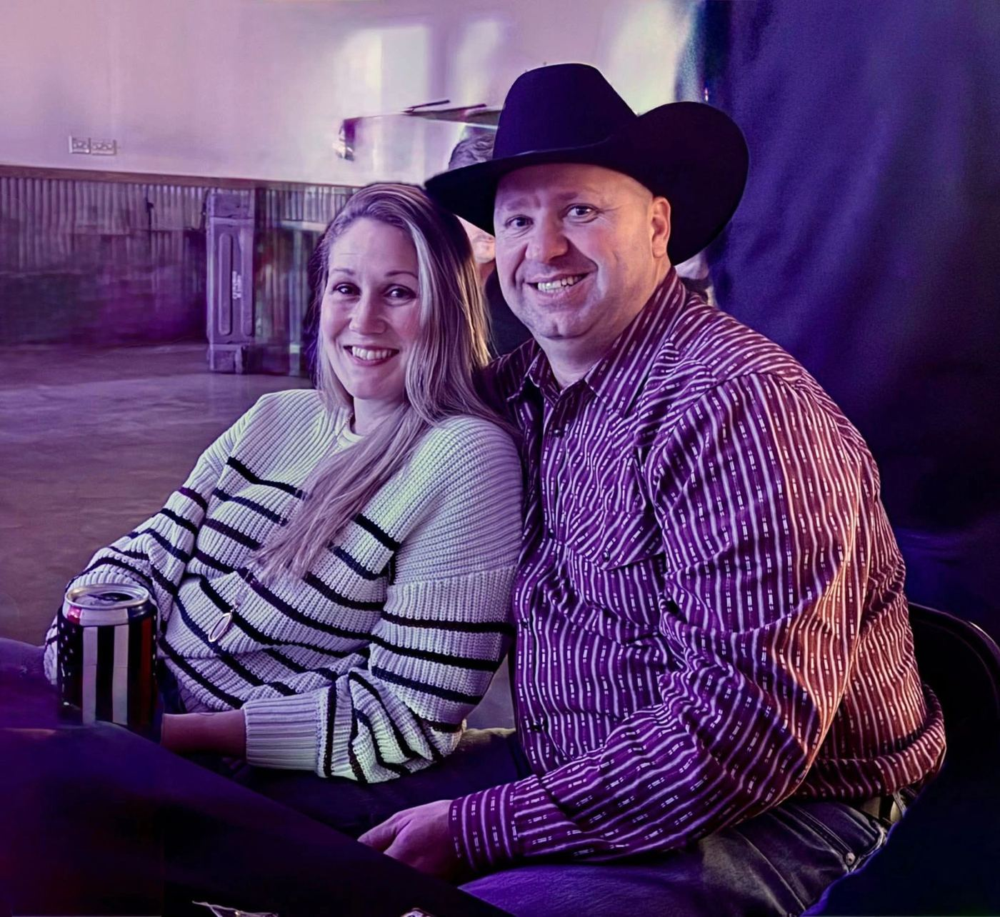
Know someone who needs help?
If a Brazos County first responder is hurt, sick or struggling, tell us. Confidential. Self-nominations welcome.
Nominate a first responderBe their backup
Donate, sponsor a table, or give an auction item. Every grant stays in Brazos County, with the officers who serve it or served it for years.
Pick how to help